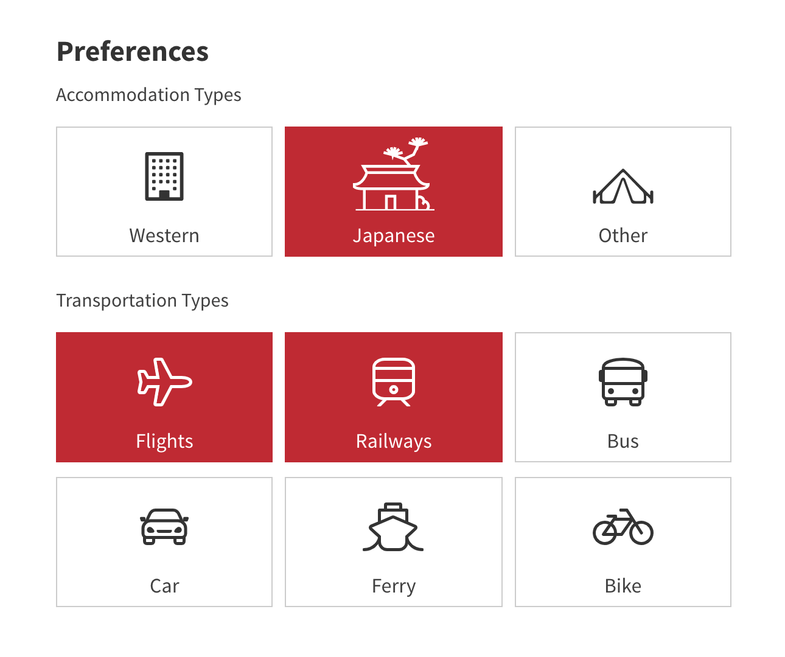
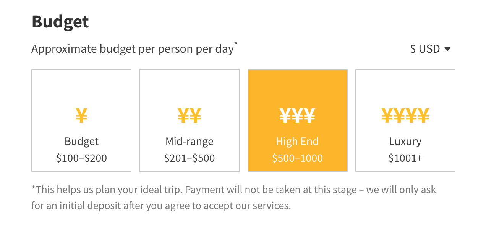
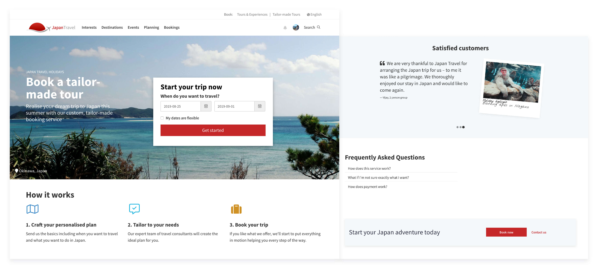
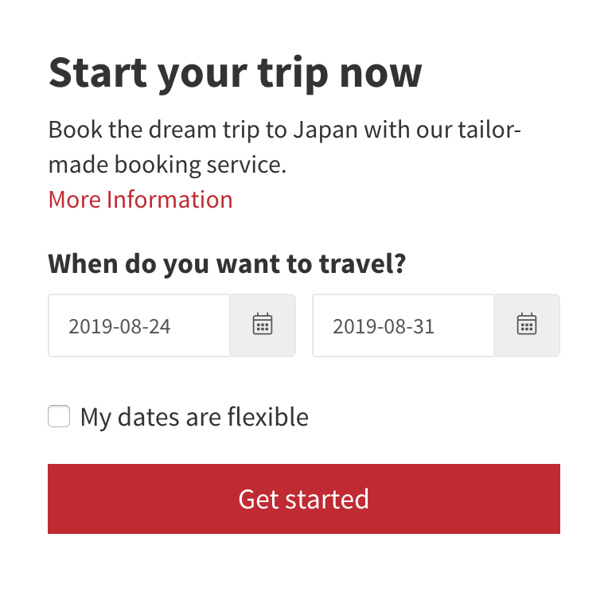

Japan Travel owns a Type II-licensed travel agency providing tailored tours starting through online inquiries.
Core Team
- Software Engineer
- Creative Director
- Lead Designer (Me)
My Role
- User research
- Product Design
- Front-end Development
The Impact
- Increased inquiries by 253%
- Decreased drop-off rate by 33%
- Increased user satisfaction
The Challenge
Japan Travel's online travel agency crafts tailored tours for travelers varying from individuals to large company groups. Previously, this journey started at a long tedious online form with an abundance of optional questions to fill in.

Our high-level goals were to turn this first online touchpoint into a more pleasant experience and to increase the number of bookings.
Setting the right metrics
When starting this project, metrics weren't set nor tracked. To improve the outcome, I first had to define what a more pleasant experience meant and define how we could measure this.
Using Google's HEART framework as an aid I decided that we should focus on 3 key goals: adoption rate, task success, and user happiness.
| Goal | Signal | Metrics | |
|---|---|---|---|
| Adoption | Increase the number of bookings per month | Rate of users using the service, Number of bookings |
|
| Task Success | Users to book a tailored tour | Number of successful inquiries |
|
| Happiness | The service is effortless and useful | Anxiety and stress, user satisfaction, excitement |
|
Discovery: Gathering insights
Before jumping into the design phase I had to gain more clarity on what the actual problems were and had to do more research. I started by interviewing our travel agency members who were in direct contact with our target users to figure out what information was essential for them to start crafting a tailored tour.
Next, I used Hotjar to review click and hover heatmaps, and recordings of the users using the form. This enabled me to see what questions users would skip, be stuck upon or have trouble answering.
Last, I reviewed former inquiries to get familiar with the user's vocabulary and to find out common questions that weren't available in the form yet.
The insights
Combining the results of the research led to a few common themes:
Too many options
The form tried catering to all kinds of travelers at once, leading to unnecessary and even distracting options for the majority of users. It was so big that users would feel overwhelmed at first sight and instantly drop off.
Reading fatigue
Users had to read a lot and weren’t excited about filling in the form. It felt dull and it contained a lot of text without a clear hierarchy to lead the eye.
Unexpected outcomes
User interviews revealed that users did not understand the process of the service and that there were uncertainties about the outcome. They had questions such as whether this was a paid service and if it were when they'd had to pay.
The result: A new flow
The revised touchpoint now consists of an effortless multi-step application form with an upfront explanation of the service, social credentials, and a personal thank you upon completion.

Chunking information
Combining the insights of the interviews and recordings I was able to reduce the number of questions and options in the form, enabling the users to go through the form quicker. With multiple iterations, I was able to group these questions into 4 themes to reduce cognitive load.
-
1 About you
-
2 Your trip
-
3 Your group
-
4 Preferences
- About you
- Your trip
- Your group
- Preferences
Visualizing the form
Chunking the form was a good first step, however, the form would still feel dull and wasn’t fun at all to fill in. Not something you'd want to experience as a first starting point of something that’s supposed to be an exciting holiday. To make the form feel less form-like I used various icons and visuals so that users would have to read less and could focus on quickly filling in the form.

The visuals helped users choose the available options quicker as the touch areas were bigger and they'd have less information to digest at once.
Iterating the form: Setting the right currency
User testing revealed that most users did not know how much the Japanese yen is worth compared to their currency and switched from the default value.

In the new form I switched the default currency depending on the language, which meant users had 1 less thing to think about and were able to complete the form even faster.
Setting expectations and reducing anxiety
To reduce anxiety and set proper expectations we launched a landing page for the service presenting an overview of the process. Through interviews and former reviews we were able to create an FAQ section, which enabled us to answer questions users most likely had about the service upfront. This helped users understand that this was, in fact, a paid service before filling in the form.

In the budget section we reinforced payments not being taken at this stage through a disclaimer, this reduced doubt on whether they should complete the form, reducing the drop-off rate.
To further increase trust in the paid service we asked the travel agency to get a few reviews from former customers as a means of social proof.
“We are very thankful to Japan Travel for arranging the Japan trip for us – to me it was like a pilgrimage. We thoroughly enjoyed our stay in Japan and would like to come again.”
Increasing Adoption and Getting Started
To get started I used the foot-in-the-door psychology principle by only asking the travel dates upfront. This resulted in the user starting the form with just a small commitment before we started asking them more information, ultimately increasing the number of inquiries through the form.

To further increase adoption, I designed a widget of a small starting form. Releasing this widget around the site in relevant sections increased the amount of entry points to the form, helping users to quickly get started and further increasing the adoption of the service.
Business inquiries
Since businesses required a different approach altogether, we decided to create a separate form and landing page.

For this type of user we made the form even smaller to focus on starting a conversation because they might not have all the information available upfront. Instead of showing user testimonials we used company credentials to show what other businesses have used this service before.
The impact
We were not only able to increase the number of users starting the form, but also decreased the drop-off rate by 33% through making the form simpler to use. Users felt more confident using the new multi-step form and the final results have been a great success with an increased amount of inquiries by 253%.
“Japan Travel was fantastic in helping arrange a variety of activities for our group. They were highly organized, knowledgeable and responsive - with a great attitude too!”